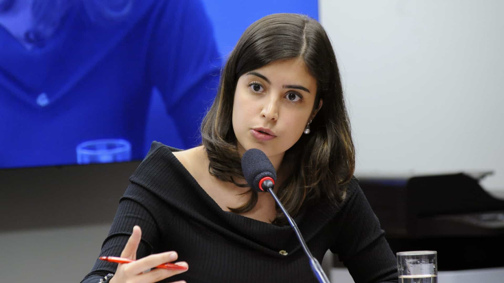

De Harvard ao Congresso Nacional
Tabata Claudia Amaral de Pontes é uma política e ativista pela educação brasileira e deputada federal por São Paulo, tendo sido a sexta candidata mais votada no estado, com 264.450 votos, nas eleições de 2018.
Sua história
Formada em Ciências Políticas e em Astrofísica, pela Universidade Harvard, representou o Brasil em cinco competições internacionais de ciências, graduou-se com honras máximas e recebeu o Prêmio Kenneth Maxwell em estudos brasileiros e o Prêmio Eric Firth para o melhor ensaio sobre o tema de ideais democráticos por sua tese. Logo após a sua graduação, retornou ao Brasil para dedicar-se ao seu ativismo social.
Tabata Amaral é cofundadora do Movimento Mapa Educação, que tem como missão engajar os jovens na luta por uma educação de qualidade para todos os brasileiros e do Acredito, movimento político nacional e suprapartidário que busca a renovação do congresso.
Tabata idealizou o primeiro "gabinete itinerante" do Congresso, projeto dividido com outros dois parlamentares do movimento Acredito. Um trailer semanalmente visita uma cidade diferente levando formação política para a população. O lançamento do projeto ocorreu em março de 2019. Segundo a parlamentar, a ideia é "quebrar esse muro que existe entre Brasília e o Brasil”.
 (1).jpg)
Autora: Giovanna De Col Bisetti
Aluna de front-end na {reprograma}
https://github.com/gibisetti